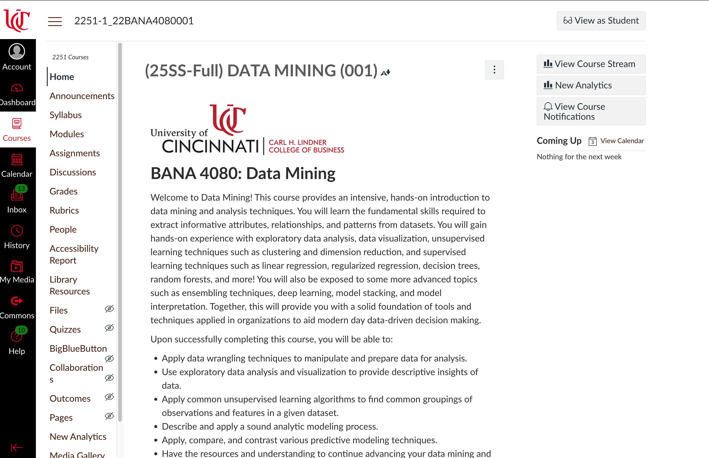
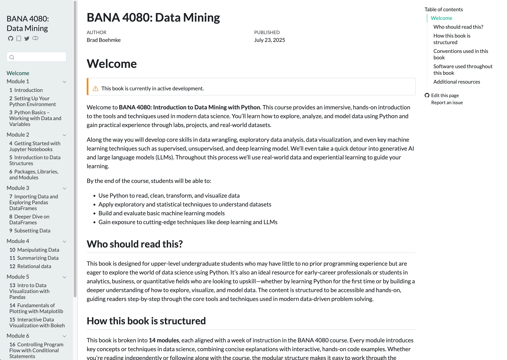
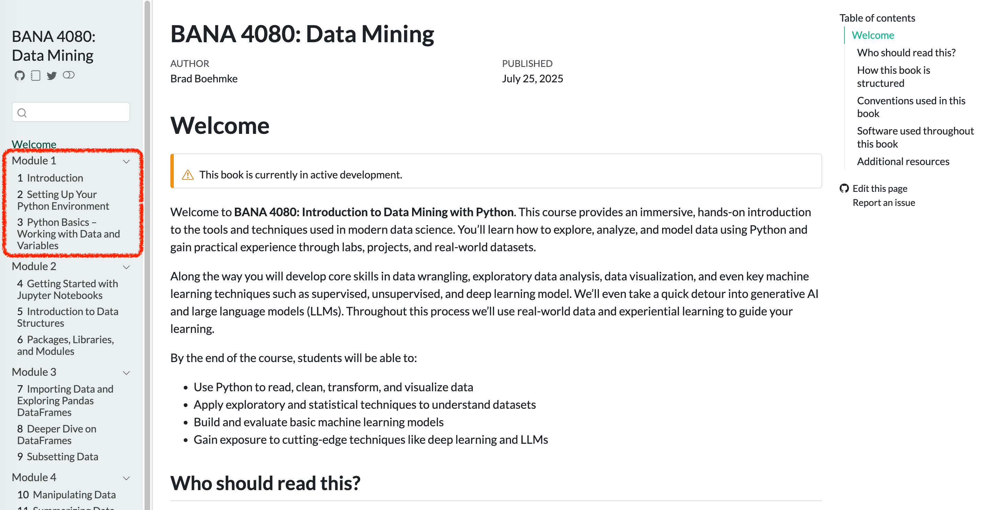

flowchart LR
subgraph DM[Data Mining]
direction LR
subgraph Data
end
subgraph Cleaning
end
subgraph Wrangling
end
subgraph EDA
end
subgraph Modeling
end
subgraph Interpretation
end
end
A[Stakeholders] --> DM
B[Organizational Requirements] --> DM
DM --> Decisions --> Value
Data --> Cleaning --> Wrangling --> EDA --> Modeling --> Interpretation
Interpretation --> Data
BANA 4080
Welcome to BANA 4080
Brad Boehmke
Phonetically: “Bem” + “Key”
Alternatives:
- Dr. / Professor B
- Brad
Contact:
- Read Communication Expectations Canvas page first!
- Email: boehmkbc@ucmail.uc.edu
- Office: Lindhall 3412

Fun Fact: Golf Obsessed
Meet Your TA
👋 [TA Name]
- [Junior/Senior/Graduate student] in Business Analytics
- Passionate about helping you succeed
- Great resource for coding questions, labs, and homework
📧 Email: [TA Email]
🕐 Office Hours: [Insert schedule or by appointment]
Important
Don’t hesitate to reach out — they’re here to support you!
Today’s Agenda
- What is data mining?
- Course overview & goals
- Course roadmap
- Tools & setup preview
- Why Python?
- Q&A + student discussion
What is Data Mining
Data Mining is All Around Us
Organizations use data mining to drive decisions every day.
Real-World Examples:
- 🛒 Kroger analyzes loyalty card data to personalize digital coupons.
- 🎶 Spotify recommends music based on your listening history and those like you.
- 🏥 Hospitals use patient data to predict readmission risks.
- 🏈 NFL teams analyze player movement data to improve performance and strategy.
- 📦 Amazon tracks browsing behavior to recommend products and optimize inventory.
Important
Every time you browse, click, buy, swipe, or stream — you’re generating data.
What Is Data Mining?
The process of uncovering meaningful patterns, trends, and relationships in large data sets
Why is it important?
- 📈 Helps organizations make better decisions
- 🔍 Reveals insights that would otherwise go unnoticed
- 🤖 Powers personalization, prediction, and automation
- 💰 Drives business value in nearly every industry
Important
Data mining turns raw information into actionable knowledge
Activity
Where Do You See Data Mining?
🤔 Think about your daily routine — when are you being “mined”?
Instructions:
- Form groups of 2–3 students
- Brainstorm at least 3 examples where you think data mining is happening in your life
- We’ll share a few examples as a class
💬 Look for clues in:
- Shopping & entertainment
- Health & fitness
- Social media & tech
- Education or travel
Please think about this for 5 minutes.
Challenge
In-Class Challenge: Your First Day on the Job
🎉 You just landed your first internship or job at a large retail company. On Day 1, your manager says:
“We’re trying to understand what drives repeat purchases. Can you dig into this and see what you find?”
You’ve been handed three datasets:
- 🧾 Customer Transactions
- 🛒 Product Information
- 👥 Customer Demographics
Download the data from
TBDWhat do you do next?
Group Activity: Where Would You Start?
Work in groups of 2–3 and discuss:
- 🤔 What kinds of questions could you ask?
- 🔍 What would you look for in the data?
- 🛠️ What tools or skills do you wish you had?
- 💬 What’s hard about this kind of open-ended problem?
Please think about this for 8 minutes.
Important
There’s no “right answer” — this is what real-world analysis looks like.
Debrief: What Did You Learn?
Let’s talk through what made this challenge… challenging:
- 🧭 How did it feel to be given a vague problem?
- 📊 What did you want to know about the data before starting?
- 🧠 What tools or skills do you wish you had?
- 💬 Did your group take different approaches?
Key Takeaways:
- Real-world problems rarely come with clean instructions
- Good data work starts with asking the right questions
- This course will help you learn how to explore, analyze, and communicate insights from messy data
Course Overview
Why Learn Data Mining?
Data is everywhere — but insight is rare.
Regardless of your major, data mining gives you a competitive edge:
- 📊 Marketing: Understand customer behavior and optimize campaigns
- 💵 Finance: Detect fraud, model risk, and forecast performance
- 🏭 Operations: Improve efficiency, forecast demand, reduce waste
- 👩💼 Management: Support evidence-based decisions across teams
Important
Today’s business leaders are expected to be data-savvy decision makers
What You’ll Learn in BANA 4080
By the end of this course, you’ll be able to:
- Write basic Python code to work with data
- Clean, wrangle, and analyze messy real-world datasets
- Visualize insights clearly and effectively
- Understand how various ML/AI models are used in organizations
- Build simple ML/AI models for prediction and pattern discovery
- Communicate data-driven findings to others
Important
This course is not about memorizing syntax — it’s about thinking with data
What About AI? Won’t It Do This for Me?
🤖 AI tools like ChatGPT are amazing — but they don’t replace thinking with data.
- AI can help you write code… but it won’t ask the right questions
- AI can summarize data… but it can’t understand your business context
- AI is only as good as the data, prompts, and interpretation you provide
Important
The future belongs to people who know how to collaborate with AI, not be replaced by it. You will learn to use AI to help you build solutions.
Course Roadmap
Course Roadmap
Your journey through BANA 4080:
- Weeks 1–3: Python basics & Working with data
- Weeks 3–4: Data wrangling & Exploratory analysis
- Weeks 5-6: Data visualization & Efficient programming
- Week 7: Mid-term
- Weeks 8-12: ML & AI
- Weeks 13-14: Final project
Important
This course builds your skills step-by-step — like a training plan for thinking with data.
How You’ll Learn
Each week follows a consistent rhythm:
- 🧠 Tuesday (Lecture): Learn concepts, explore examples, discuss ideas
- 💻 Thursday (Lab): Practice coding, get hands-on, work with real data
Assessments include:
- 📚 Weekly reading quizzes
- 📝 Biweekly homework assignments
- 📊 Midterm and final project
- ❌ No conventional tests!
Important
Expect to build something meaningful — not just learn theory.
Resources
Everything You Need Is in One of Two Spots
📍 Course Canvas Page

📘 Course Textbook

Step 1
Who has read through the “Start Here!” module?
Let’s hit on a few important items
Tools & Setup Preview
Why Learn to Code? 🤔
- Coding = flexibility + power
- Handle real-world data: big, messy, inconsistent
- Automate repetitive tasks
- Think algorithmically and analytically

Why Python? 🤔
- Widely used
- Easy-to-read syntax (great for beginners)
- Massive ecosystem: pandas, numpy, matplotlib, scikit-learn
- Community support: tutorials, libraries, AI tools
- Most organizations are shifting toward Python as the primary language for their data science and engineering codebases

Important
Python is the most valuable tool in your analytics toolbox.
How You’ll Run Python: Google Colab
What is Colab?
- 💻 Free cloud-based Python environment from Google
- 🚫 No software installation needed to get started
- ✅ Works in your browser – just click and code
Why Colab First?
- Easy, consistent experience for everyone on Day 1
- Allows us to focus on learning — not debugging installs
- We’ll gradually move toward installing tools locally (e.g., Anaconda, Jupyter, VS Code)
Important
You’ll be up and coding on Day 1 — no setup headaches!
Next Steps
Next Steps
- Read the “Start Here!” module
- Start working through Module 1’s readings
- Be ready to code in Colab on Thursday
- Complete reading quizzes by EOW

Q&A
Q&A 🙋♀️
- Open floor for any questions regarding the course structure, expectations, or content.
- Discussion on how this course aligns with your academic and career goals.
- Or anything else…golf?
BANA 4080